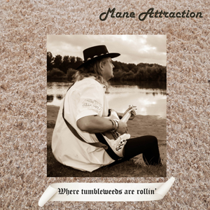
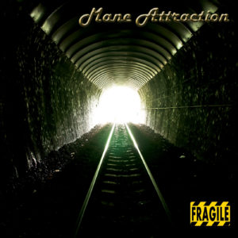
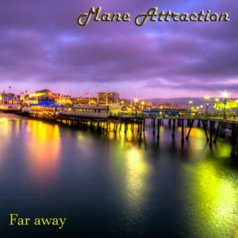
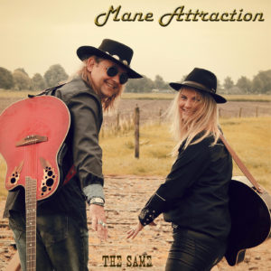

Releases
-

Where Tumbleweeds are rollin’ – Single – Release TBA 2022
Jeroen Schaafsma – Vocals, guitars and drum programming Inge Rijnja – Vocals Theo Dekker – Hammond organs Rob van der Hurk – Bass Charlie Wayne Watson – Native Flute
Recorded at: Psycho Maniacs Studio, NL Engineers: J Schaafsma Mastering: ?? Photography: Peggy Korver Artwork: J Schaafsma
-

Picture Frame – Single – Released February 24th 2020
Jeroen Schaafsma – Vocals, guitars Inge Rijnja – Vocals Emily Nelson – Cello Rob v/d Hurk – Bass
Recorded at: Psycho Maniacs Studio, NL – Emily Nelson, Nashville, TN, USA Engineers: J Schaafsma, E Nelson Mastering: Mika Jussila at Finnvox studios, Helsinki – Finland Producer: J Schaafsma
-

Fragile – Single – Released August 9th 2018
Jeroen Schaafsma – Vocals, guitars Michael Rinne – Upright Bass Spencer Cullum jr – Pedalsteel Judy Rodman – Backing vocals
Recorded at: Psycho Maniacs Studio, NL – Michael Rinne, Nashville, TN, USA – Mainframe recording studio, Nashville, TN, USA Engineers: J Schaafsma, Michael Rinne, Nathan Smith Mastering: Dave Donnelly at DNA Mastering Los Angeles CA, USA Producer: J Schaafsma Photography: Sura Nualpradid
-

Far Away – Single – Released October 26th 2017
Jeroen Schaafsma – Vocals, guitars Emily Rose Nelson – Cello
Recorded at: Psycho Maniacs Studio, Holland. Michael Rinne Nashville, TN, USA Producer / Engineer: J Schaafsma Mastering: Dave Donnelly at DNA Mastering Los Angeles CA, USA Photography: Alik Griffin
-

The Same – Single – Released August 27th 2016
Jeroen Schaafsma – Vocals, guitars, mandolin, keyboards Patries Grijpstra – Vocals Theo Dekker – Hammond, accordion Wally Moyers – Pedal Steel Rob van der Hurk – Bass Joeri de Jong – Drums, percussion
Recorded at: Psycho Maniacs Studio, Holland. Studio84 Lubbock TX, USA, Joeri de Jong, Holland Producer / Engineer: J Schaafsma Mastering: Dave Donnelly at DNA Mastering Los Angeles CA, USA Photography: Melanie Mulder